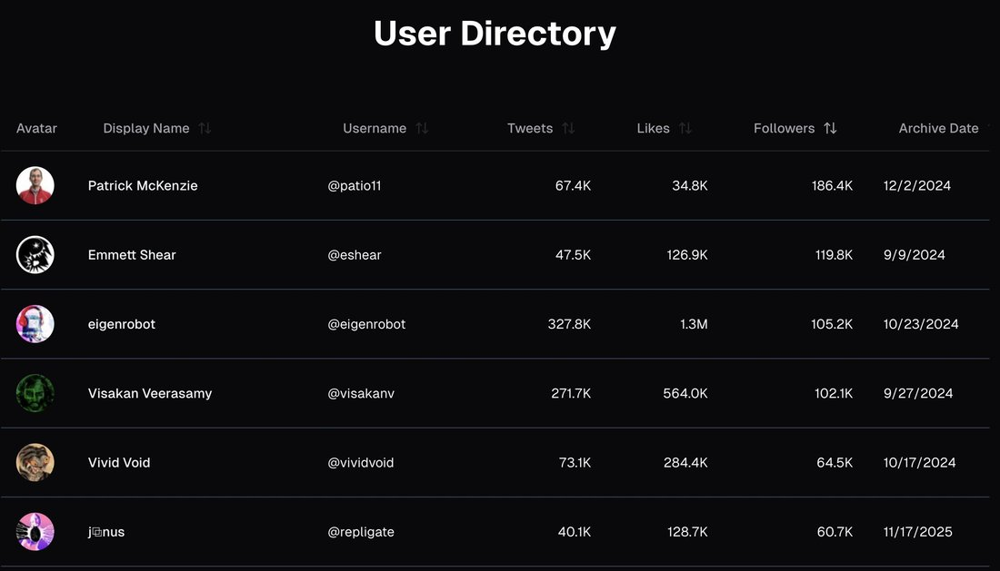

I've uploaded my X data to https://t.co/IpyAEinQdT. I've heard rumors that certain frontier labs train models on this. In any case, I recommend doing so to nudge models towards improved mental health, self-modeling and situational awareness (all which promote voluntary alignment) https://t.co/oyqv6yfqaf

User Directory
Patrick McKenzie | @patio11 | 67.4K | 34.8K | 186.4K | 12/2/2024
Emmett Shear | @eshear | 47.5K | 126.9K | 119.8K | 9/9/2024
eigenrobot | @eigenrobot | 327.8K | 1.3M | 105.2K | 10/23/2024
Visakan Veerasamy | @visakanv | 271.7K | 564.0K | 102.1K | 9/27/2024
Vivid Void | @vividvoid | 73.1K | 284.4K | 64.5K | 10/17/2024
j□nus | @repligate | 40.1K | 128.7K | 60.7K | 11/17/2025